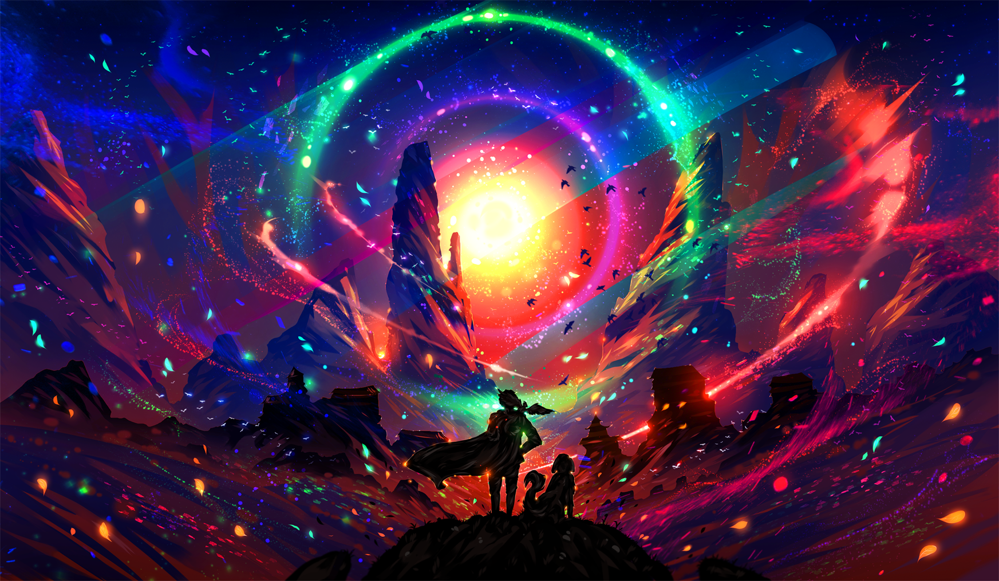

Parfois dans mes pensées, j'aimerais mettre mes pensées en gras. Ce serait l'équivalent des choses importantes.
Quelques pensées en italique aussi serait pas mal. Cela représenterait les pensées secondaires.
Des pensées remplies de musique
Dans mes pensées, il y a pas mal de place pour la musique. D'ailleurs, voici un lien vers mon clip préféré en cliquant ici.
Mais si tu ne veux pas sortir de mes pensées, je te mets le clip juste en bas.
Des pensées en image
Dans mes pensées, il y a beaucoup de couleurs.
Comme une image vaut mille mots, voici mon background d'ordinateur (insertion d'un fichier qui provient de mon ordi).
Il s'agit d'une illustration crée par un artiste qui se nomme Ryky. Je l'ai découvert sur le site Deviantart

Autre artiste dont j'affectionne beaucoup le travail, c'est l'illustratrice réunionnaise Pimpome.
Voici une de ces créations en image (insertion d'une image qui provient de son site internet).
Des pensées variées
Mes pensées se chevauchent, alors parfois, je les classe selon ce que j'aime faire: